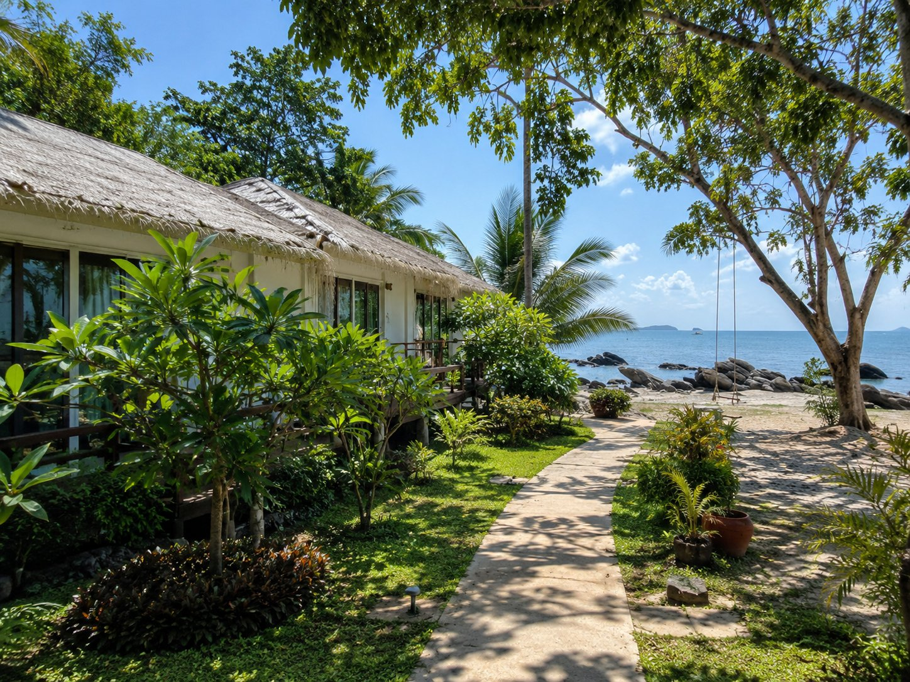
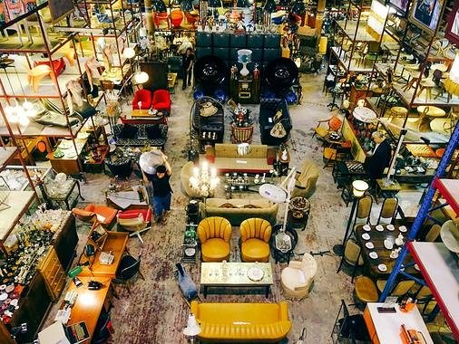
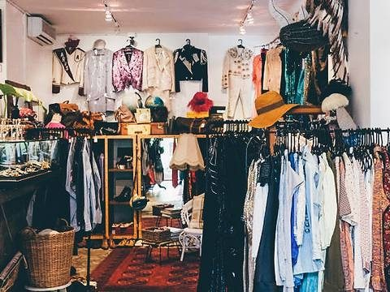
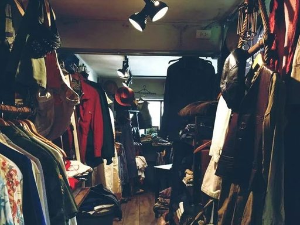
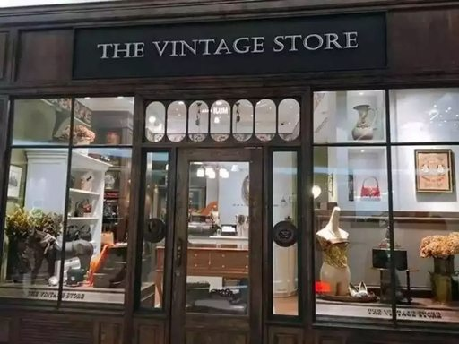
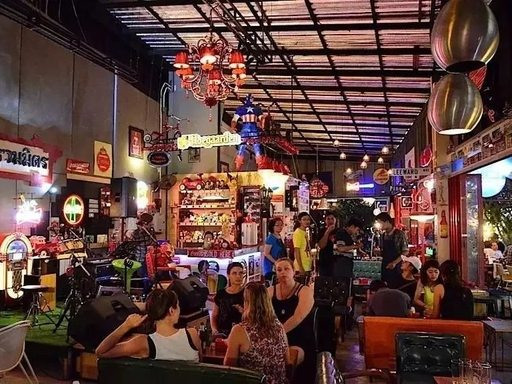
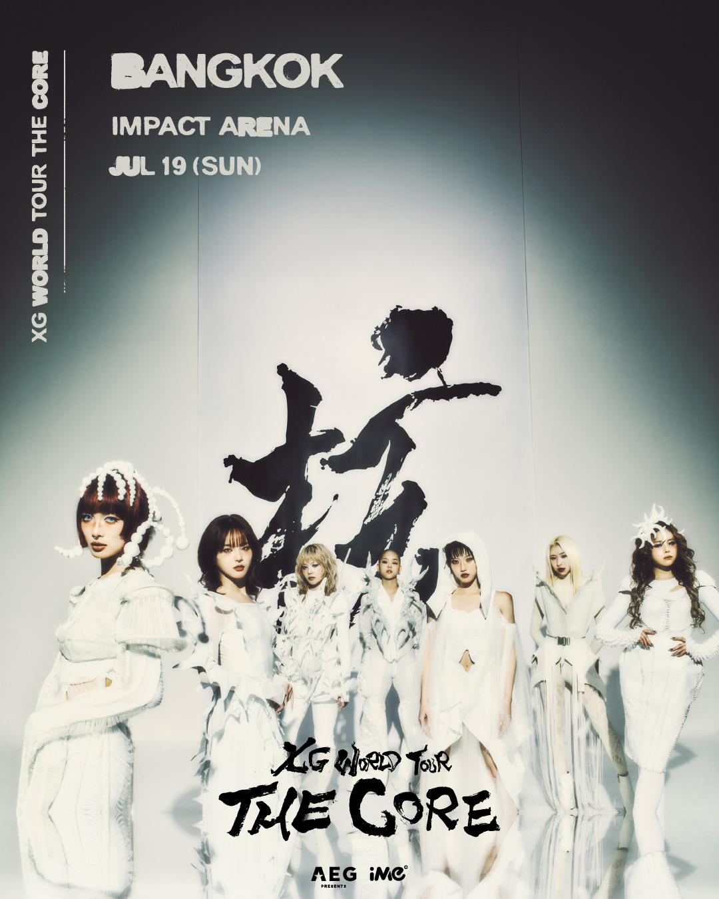
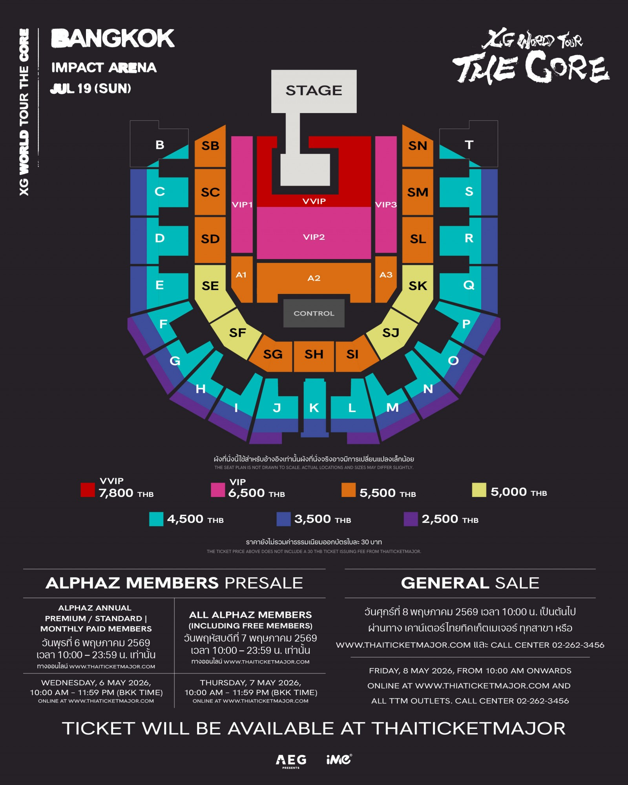

七月十六日 曼谷 至 沙美岛
- MU8653 起飞，上海 → 曼谷。
- 抵达素万那普机场，过关取行李约 05:00 完成。
- 机场前往罗勇府 Ban Phe 码头，推荐提前包车。
- 乘船上岛，前往 Larissa 度假酒店。
- 寄存行李，换夏装，海边 Brunch。
- 奥普劳海滩日落，夜晚火舞表演与海边小酌。
快艇 15 分钟
上岛费 200 泰铢
西海岸日落
紧邻奥普劳海滩，西海岸日落、人少静谧。前台可寄存行李，适合抵达后立刻切入海边 Brunch 与日光浴。
位于 Silom / Sathorn 核心区，靠近 BTS，白天去美术馆与商圈，夜晚去屋顶酒吧或俱乐部都高效。
Emsphere 的金属感、Central Embassy 的美术馆式留白、Ari 的小众设计师店，组合成曼谷最适合慢逛的潮流线。
从 Papaya Vintage 的巨型古董仓库，到 Central Embassy 的认证高定二手，一条线覆盖猎奇、收藏与夜市烟火气。





纯白环形空间适合缓慢游走，当代艺术、摄影与服装设计展能为整个旅行留下更安静的视觉尾音。
室内水上市场、苹果直营店、高奢与伴手礼一站式收束，是返程前把城市体量感装进行李箱的最后一站。


连锁海鲜餐厅，ICONSIAM / 商场动线友好，点菜稳定，适合 Day 4 河岸购物后补一顿不太折腾的泰式海鲜。
Impact Arena 的紫色夜幕，是这趟旅程从热带度假切换到城市脉搏的最高点。


Grab 接单快、可绑外币卡；Bolt 价格低 10%-20%，更适合现金支付。沙美岛返曼谷可优先包车。
提前购买 AIS / TrueMove 8 天无限流量卡，落地即可联网，减少机场停留时间。
寺庙需有袖上衣与过膝下装；Rooftop Bar 与顶级商场建议 Smart Casual；海岛适合高饱和度时装。
护照有效期需超过 6 个月；现金建议每人 10000 泰铢；墨镜、薄外套、电源转换头都要放进随身清单。
证件原件存酒店保险箱，随身带复印件；不议论王室、不触碰他人头部；出租车与突突车要求打表。
禁止携带或使用电子烟；入境禁带新鲜水果与肉类；涉水时留意红旗，浮潜穿救生衣。